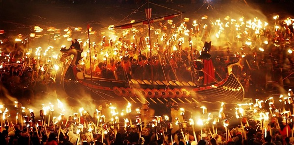

Шотландия


|
|
Шотландия Нужно поджечь бочку с дегтем и прокатить ее по улицеВ Шотландии праздник Нового года называют "Хогмани". На улицах праздник встречают шотландской песней на слова Роберта Бернса. По обычаю на новогоднюю ночь поджигают бочки с дегтем и катят их по улицам, сжигая, таким образом, Старый год и приглашая Новый. Шотландцы считают, что от того, кто войдет первым в их дом в новом году, зависит удача или неудача в семье на весь следующий год. Большую удачу, по их мнению, приносит темноволосый мужчина, который вносит в дом подарки. Эта традиция называется "ферст футинг". На Новый год готовят особые традиционные блюда: на завтрак обычно подают овсяные лепешки, пудинг, особый сорт сыра - кеббен, на обед - вареного гуся или бифштекс, пирог или яблоки, запеченные в тесте. Гости должны непременно принести с собой кусочек угля, чтобы бросить в новогодний камин. Ровно в полночь распахиваются настежь двери, чтобы выпустить старый и впустить Новый Год. |
|